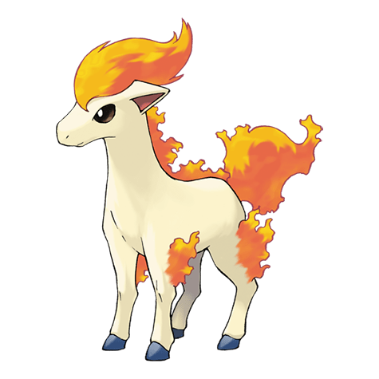

Назад
Понита

Понита — Покемон 1 поколения под номером 77 в Покедекс. Обитает он в регионе Канто и относится к Огненому типу. Понита очень слаб при рождении. Он едва может стоять на ногах. Спотыкаясь и падая, этот Покемон не отстаёт от своего родителя и со временем становится сильнее.
Тип:
Огненый
Эволюция
# 077 Понита
=>
# 078 Рапидаш